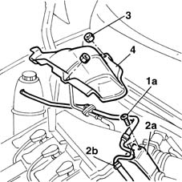
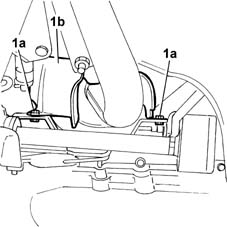
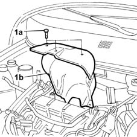
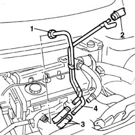
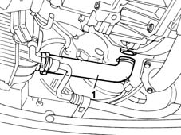
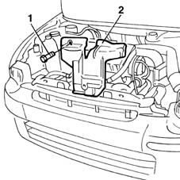
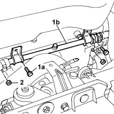
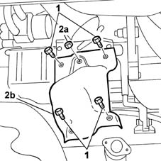
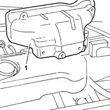

1072C44 exhaust manifold heat shield on bulkhead - r+r
- Path
- Procedures > 10 ENGINE UNIT > 1072 INLET AND EXHAUST MANIFOLDS > 1072C exhaust manifolds > 1072C44 exhaust manifold heat shield on bulkhead - r+r
- Kind
- repair procedure (removal / refitting; the operation number is the code)
- Applies to
- all engines; all production periods
- Interactive page
- https://sloeber94.github.io/elrnDB-fMltpl/en/#/2891285
Applies to: engines: 1.6 16v; all production periods
 Removing
Removing
 Refitting
RefittingOpen the bonnet lid.
1. Unscrew the retaining bolts
2. Take the accelerator cable bracket (2a) and coolant hose (2b) off the air intake casing.
3. Undo the nuts fixing the bulkhead to the exhaust manifold.
4. Remove the bulkhead from the engine bay.

Applies to: engines: 1.6 16v; all production periods
Refitting
RemovingFit the bulkhead to the exhaust manifold.
Tighten the nuts securing the bulkhead to the reinforcements
Position the coolant hose and then the accelerator cable bracket.
Tighten the bracket retaining bolts.
Close the bonnet lid.
Applies to: engines: 1.6 16v; all production periods; only with equipment: Euro 3
Removing
Refitting1080B94 front lambda probe with catalitic converter r r
1080B95 rear lambda probe with catalitic converter r r
1. Undo the lower bolts (1a) fixing the bulkhead (1b).

Applies to: engines: 1.6 16v; all production periods; only with equipment: Euro 3
Lower the lift.
1072B50 sleeves connecting air capacity box to inlet manifold is - r+r
1. Undo the upper bolts (1a) fixing the bulkhead (1b) and remove it, sliding it upwards.

Applies to: engines: 1.6 16v; all production periods; only with equipment: Euro 3
Refitting
RemovingCheck that the heat shield is not damaged or distorted and, if necessary, replace it.
Position the heat shield and tighten the upper fixing bolts to the recommended torque.
 | Fastening | Component | Ø | Value (daNm) |
|---|---|---|---|---|
- | Bolt | LH MANIFOLD HEAT SHIELD BULKHEAD | M6 | 0.6 |
1072B50 sleeves connecting air capacity box to inlet manifold is - r+r
Raise the lift.
Tighten the heat shield lower fixing bolts to the recommended torque.
| Fastening | Component | Ø | Value (daNm) |
|---|---|---|---|---|
- | Bolt | LH MANIFOLD HEAT SHIELD BULKHEAD | M6 | 0.6 |
Lower the ramp.
Applies to: engines: 1.9 JTD 8V; all production periods
Removing
RefittingPlace the car on a ramp.
Place a container under the vehicle to collect the coolant.
1. Disconnect the coolant outlet hose from the engine oil heat exchanger from the rigid coolant intake pipe on the water pump.
2. Diconnect the sleeve carrying coolant to the engine oil heat exchanger from the rigid pipe.
Raise the lift.
3. Disconnect the rubber hoses from the oil heat exchanger.
4. Remove the heat exchanger outlet and inlet pipes.

Applies to: engines: 1.9 JTD 8V; all production periods
1. Disconnect the air pipe to the air/air heat exchanger from the turbocharger.

Applies to: engines: 1.9 JTD 8V; all production periods
1. Undo the retaining bolts.
2. Remove the exhaust manifold heat shield.

Applies to: engines: 1.9 JTD 8V; all production periods
Refitting
RemovingFit the exhaust manifold heat shield.
Tighten the bolts.
| Fastening | Component | Ø | Value (daNm) |
|---|---|---|---|---|
- | Bolt | DISCHARGE PIPE TO MANIFOLD HEAT SHIELD | M6 | 0.9 |
Connect the pipe leading to the air/air heat exchanger to the turbocharger.
Fit the heat exchanger outlet and inlet lines.
Connect the rubber hoses to the oil heat exchanger.
Lower the lift.
Connect the sleeve carrying coolant to the engine oil heat exchanger to the rigid pipe.
Connect the coolant outlet pipe from the engine oil heat exchanger to the rigid coolant inlet pipe on the water pump.
- 1088A10 Engine COOLANT - Check density' and top up level, if necessary
Applies to: engines: 1.9 JTD 8V; all production periods; only with equipment: Euro 3
Removing
RefittingPlace the car on the ramp.
Disconnect the battery negative terminal.
 | Name | Connector |
|---|---|---|
- | Battery |
1. Undo the bolts (1a) fixing the rigid coolant pipe (1b) between the water pump and the thermostat unit.
2. Undo the upper nuts fixing the heat shield.

Applies to: engines: 1.9 JTD 8V; all production periods
Raise the lift.
1. Undo the bolts fixing the heat shield to the catalytic preconverter.
2. Undo the nut (2a) and remove the heat shield (2b) from the engine compartment.

Applies to: engines: 1.9 JTD 8V; all production periods
Lower the lift.
1. Remove the heat shield from the engine compartment.

Applies to: engines: 1.9 JTD 8V; all production periods
Refitting
RemovingPosition the catalytic preconverter heat shield in its original position, then tighten the fixing bolts on the exhaust manifold and the converter to torque.
| Fastening | Component | Ø | Value (daNm) |
|---|---|---|---|---|
- | Bolt | LH MANIFOLD HEAT SHIELD BULKHEAD | M6 | (Exhaust manifold) 0.9 |
Fit the exhaust manifold heat shield.
Tighten the upper nuts fixing the heat shield to the exhaust manifold.
| Fastening | Component | Ø | Value (daNm) |
|---|---|---|---|---|
- | Nut | LH MANIFOLD HEAT SHIELD BULKHEAD | M6 | (Exhaust manifold) 0.9 |
Position the rigid coolant pipe between the water pump and the thermostat unit, then tighten the fixing bolts.
Connect the battery negative terminal.
| Name | Connector |
|---|---|---|
- | Battery |
Remove the car from the ramps.
Topics linked from this page (5)
- 1048A23 cold air intake - r r
- 1072B50 sleeves connecting air capacity box to inlet manifold is - r+r
- 1080B94 front lambda probe with catalitic converter r r
- 1080B95 rear lambda probe with catalitic converter r r
- A1 Battery
Topics that link to this page (11)
- 1016C10 cylinder head - r + r and replace gasket
- 1016C11 single cylinder head-r r gasket for versions with air conditioner
- 1028H10 connecting rod and piston set - r r
- 1028H11 piston connecting rod set - r r
- 1028H20 piston with connecting rod - r r
- 1064A19 TURBOCHARGER - EXHAUST MANIFOLD - EXHAUST PIPE CONNECTING HOSE - R.R.
- 1072C10 exhaust manifold - r + r and replace seal
- 1080B40 catalytic pre-converter - r r
- 1080B62 catalytic converter - r + r
- 1084B40 engine oil delivery pipe to turbocharger - r + r
- 1088C10 water pump - r + r